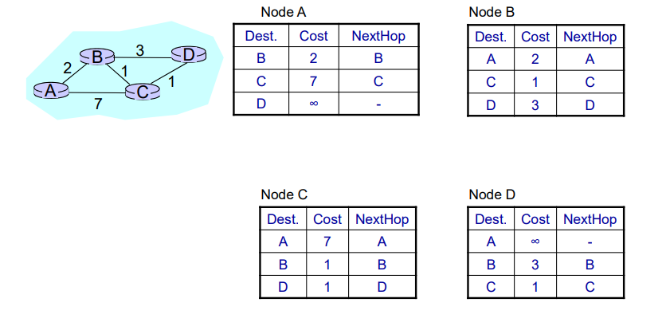
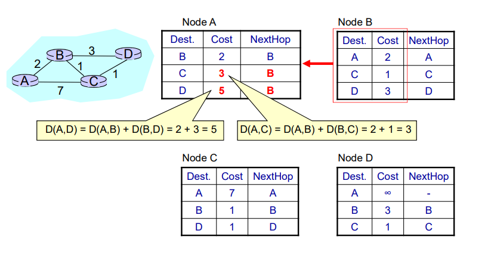
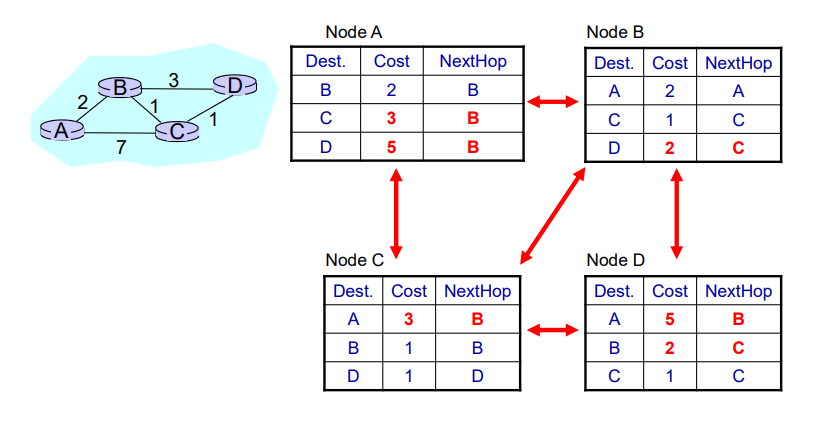
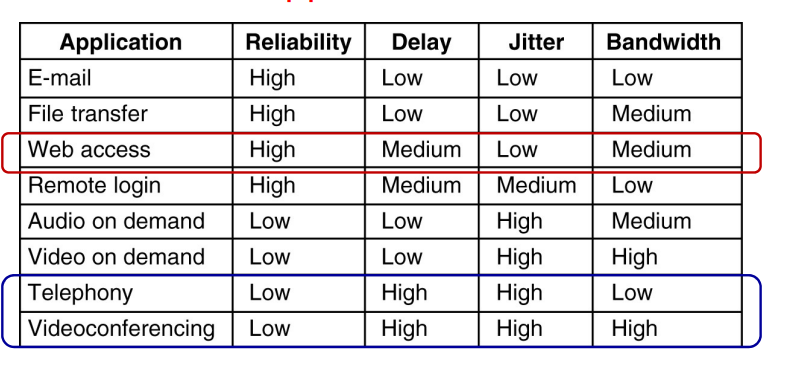
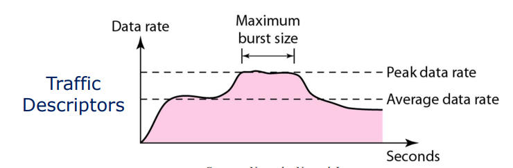
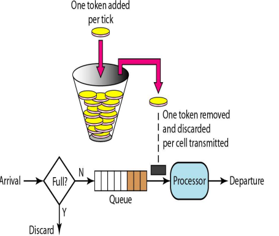
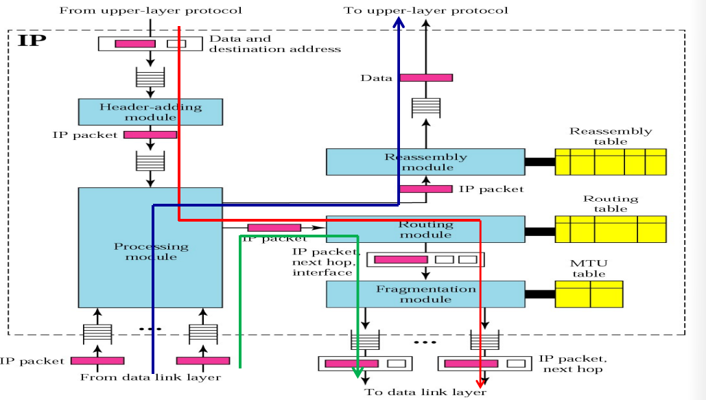
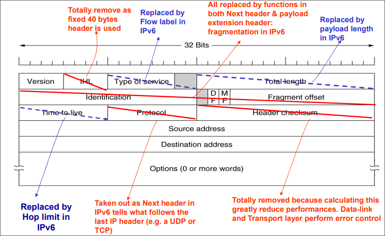

网络层
网络层的位置和功能

网络层是处理端到端传输的最底层。
"跳"的概念：
相邻的主机和路由器之间，相邻的路由器之间的一次传输就是一跳。
在一跳内的传输石油数据链路层来实现的。
一般来说，网络层具有以下这些功能：
-
网络互联
Internetworking。不同的网络可能具有不同的网络地址、实现技术，包格式。网络层需要处理这个不同并向上提供统一的接口。
-
编址
Addressing不同的网络主机之间需要统一的地址进行通信。
-
路由
Routing为了将包发送到目的的，需要决定这个数据包的下一跳，工作在第三层的路由器实现了这个功能。
-
封包
Packetizing将上一层需要传输的数据封装成统一的包。
-
分片/分段
Fragmenting不同的数据链路层网络支持的最大数据长度不同。
网络层需要将上层传输过长的包切分成合乎长度的分片，并在传输结束之后再次拼接起来。
在不同位置的网络层功能
-
发送方：
在发送者处，网络层创建一个包含发送地址，目的地址，数据的包。
网络层还会检查路由表确定这个网络包下一跳需要前往的地址。
-
路由：
在路由处的网络层负责决定数据包下一跳前往的位置：
当一个数据包到达时，网络层会检查路由表确定这个数据包会前往哪个网络接口。
-
这里的网络层负责检查数据包的目的地址和当前主机的地址一致。
网络层向上层提供的服务：
- 同路由技术独立
- 传输层将对路由完全透明
- 传输层获得的地址是统一的，甚至是在局域网和广域网中
网络层提供的服务
网络层提供了面向连接和无连接两种服务。
网络层使用分组交换提供了：
- 面向连接的网络：虚电路
- 无连接的网络：数据报
数据报网络

在数据包中需要携带目的地的完整地址，在到达每个路由时，路由通过路由表决定下一跳的位置。
每个包经过的路径可能是不一致的，因此包的到达可能是乱序的。
虚电路网络

是链路交换网络和数据报网络之间的一种网络，提供了面向连接的服务。
在数据开始传输的时候，网络会建立一条端到端的虚拟电路。
在传输的过程中，网络使用虚拟电路地址Virtual Circuit Identifier用作地址的标示，但是比标准的地址短得多。
在传输的过程中，数据包将按顺序到达。
路由算法
路由的概念和路由表
互联网就是通过路由将数量庞大的局域网连接起来的网络，因此当互联网上一个包从发送方传输到接收方时，可能会经过相当数量的路由。
在数据包经过路由器时，路由器会通过路由表决定包应该被转发到哪个接口，因此路由表最好能够决定包转发的最佳路径。
在查询路由表时，我们还希望路由表的大小时可以控制的，否则难以管理。
路由表一般情况下可以分成两种：
-
静态路由：不会经常改变的路由。
静态路由常常是手动管理的，往往保持不变。
-
动态路由：在网络中发生变化时会自动发生变化的路由表。
动态路由将通过动态路由协议
RIP，OSPF，BGP定时或者在必要时自动更改。
在路由表中有两个重要的概念：
-
路由算法：用来构建和更新路由表的算法
常见的路由算法有：
DVR，LSR，PVR -
路由协议：用于往路由之间相互通知的一组规则和流程。
常见的路由协议有：
RIP，OSPF，BGP
设计路由算法的原则
-
正确性
-
简单型
-
鲁棒性
-
健壮性
-
公平性
-
高效性
转发延迟最小，网络吞吐量最大
主要的路由策略有下面这几种：
-
固定查表路由
Fixed Routing从源到目的的简单固定映射
-
洪泛
Flooding将包发送给所有邻近的设备
-
随机选路
Random Routing随机选择一条发送的线路
-
自适应线路
当网络变化时自动改变路由表，但是需要网络的信息
洪泛
洪泛的设计思想：
- 不需要路由表
- 不需要网络中的信息
- 收到的包将被发送到处理接受端口之外的所有端口
- 最终可能会一个包多个相同副本到达目的地
但是，洪泛存在一种严重的问题：会产生巨大数量的重复数据包。
为了解决这个问题，人们提出了两种解决方案：
-
每个数据包的包头中包括一个跳计数器
每一跳，这个跳计数器都会被减一。
当这个跳计数器到达0时，这个包就会被丢弃。
发送方会利用从源地址到目的地址的长度或者子网的网络半径
subnet diameter来初始化跳计数器。 -
发送方在数据包的包头中设置序列号
每个路由都会记录每个发送方目前最大的序列表，表示这个序列号都已经通过该路由。
洪泛具有以下这些特点：
-
非常的可靠
-
至少有一个数据包会按照最短的路由达到目的地
-
网络中所有的节点都会被到达
这就表明洪泛虽然在实际中可能不使用，但是在建立路由表的过程中可能会非常有用。
最短路径选路
首先利用有向有权图来表示网络的结构。
其中网络拓扑图中的权可以具有多种含义：
- 跳数
- 路由器之间的物理距离
- 平均传输时延
- ，，，，
然后利用Dijkstra算法在这个有向有权图中构建两个路由之间的最短路径。
上面介绍的两种路由算法，在严格意义上都属于路由思想，在实际中并不能工作。
距离矢量选路Distance Vector Routing
每个路由都会维持一个路由表：
- 到其他路由的最短距离
- 下一跳使用的接口
这个路由表将会通过和响铃的路由器交换信号来更新数据。
-
路由会按照
Destination, Distance的格式周期性的发送自己的路由信息 -
当其他的路由器收到这一信息：
如果发现了更好的路由路径，路由器会更新自己的路由表
刷新已经存在的路由表
-
如果在一段时间之后都没有收到某一个路由器发送的信息，就把这个路由从路由表中删除
下面是一个网络中路由表建立的过程：
首先是各个路由中路由表的初始状态：只有相邻路由的信息：

然后路由表进行第一次迭代：节点A收到了节点C发送的信息：

节点A收到了节点B发送的信息：

由此在第一次迭代结束之后，各个节点的路由表已经变成了这个样子：

然后路由表之间进行第二次迭代：

然后路由表之间进行第三次迭代：

当迭代之后，路由表不发生变化之后，算法就认为构建结束，算法退出。
DVR算法有着这些特点和问题：
- 基于邻近节点共享的信号构建/更新路由表
- 特点：
- 同邻近节点分享整个网络的信息（到所有节点的最短距离）
- 只同初始的邻近节点共享信息
- 在固定的间隔共享信息
- 缺点：
- 构建路由表需要的迭代次数多
- ”好消息“迅速传遍整个网络，”坏消息“传得慢
在DVR算法中存在一个严重的问题——无穷计数问题。
也被称为”无穷循环

大致意思就是在节点A下线之后，但是链路上节点不能正确的获得这条消息。这是因为在路由之间相互传递消息的过程中，只传递了距离信息没有传递路径信息，就会在传递的过程中发生循环。在这里，第一次节点B认为通过节点C可以到达节点C，第二次节点C又认为通过节点B可以到达节点A，，，，如此循环下去，算法不会停止。
链路状态选路Link State Routing
路由器将同网络中的所有其他路由器分享自己得到的信息；在路由本地构建好已知的最好路由拓扑图之后，路由会发送一个链路状态包Link State Packet来通知网络中的所有路由。这种分享主要有三个重点：
- 会分享整个网络的拓扑结果
- 会向网络中的所有路由分享
- 在发生改变的时候也进行分享
LSR操作
为了让每个节点建立起路由表，使用LSR协议的路由都需要执行这一系列的操作。
-
从邻近的节点学习。
对于广播网络，广播一个特殊的
Hello包，对于点对点的网络，多播这个Hello包。邻近的节点在收到这个包之后需要发送一个包含自己的名称的回复包，其中名称（路由ID）应该是全局唯一的。
通过这种方式简化了网络的拓扑结构。
-
测量线路参数。
利用发送
echo包得到线路的延迟，测量线路的带宽。 -
构建链路状态包。

可以定时重新构建链路状态包，也可以在监听在某些特定事件发生的时候重建。
包中的序列栈
Seq是用来检验收到的链路状态包是否是最新的：- 收到一个新的
LSP，洪泛这个包 - 收到一个重复的
LSP，丢弃这个包 - 如果收到的
LSP序列编号比已经收到的最大编号小，也丢弃这个包
包中的年龄字段
Age是用来删除循环的路由：- 当一个路由下线
- 当一个路由的名称（路由ID）改变
- 当一个路由需要删除一个
LSP
- 收到一个新的
-
发送
LSP显而易见，我们需要可靠的方式将
LSP包发送出去。因此利用洪泛的方式发送LSP包，并且在两端都设置了错误侦测，收到LSP包之后都要求发送确认包。
-
计算新的路由
当一个路由收到足够数量的
LSP包之后，这个路由就可以将整个网络构建出来。在本地运行
Dijkstra算法，构建到每个目的地的最短路径，并且把最短的结果写在路由表中。
在实际中，有IS-IS，Intermediate System-Intermediate System协议和OSPF，Open Shortest Path First协议使用这个算法。
分级路由
首先出于效率原因，如果全球网络中所有的路由都需要建立一张共同的路由网络，那么这张网络中的路由数量将会非常庞大，导致整个网络的延迟很大。而且出于安全原因，单位内部的路由没有必要都暴露给互联网上的所有设备。基于这两个原因，分级路由出现了。
分级路由将网络按照域进行路由，在域间只选路到域，在进入单个域内之后，才选路到路由器。
拥塞控制和互联
不严谨的说，拥塞就是网络不足以处理大量发送到网络中的数据包。

拥塞会在任何含有等待/队列的系统当中。
如果数据包到达的数据大于数据包处理的速度，那么输入队列就会越来越长，直到队列溢出。
发送队列也是如此。
在发生拥塞的时候，会出现很长的延迟和较高的丢包率。
拥塞控制的方法
一般冲提升资源总量和降低负载两个角度上来考虑。
- 提供资源总量：
- 规划调整网络
- 选路时考虑负载的影响
- 降低负载：
- 接纳控制
Admission Control - 业务量减速
Traffic Throttling - 负载掉落
Load Shedding
- 接纳控制
业务量减速
-
路由检测是否发送拥塞
通过计算链路利用率，在路由内缓存的包数量，因为缓存不足而丢弃的包数量来检测。
为了估计队列延迟，引入
EWMAExponentially Weighted Moving Average，指数甲醛移动均值算法。因为瞬时队列延迟是一个变化很大的值，利用这种算法得到一个较为合理的值。 在公式中：- 表示最近队列的长度
s表示立即的队列长度- 是一个平衡因子
-
传递发送拥塞的信息
发送一个抑制分组（Choke Packet）给源地址主机，告知源主机发送拥塞。
为了避免再次提高网络的负载，路由会以一个非常低的速率发送抑制分组。
-
调整系统
在源地址主机收到抑制分组之后，源地址主机降低发送的速度。
除了这种方式，还有一个称作ECN的通知方式，Explicit Congestion Notification显式拥塞控制。
这种方式被TCP协议和IP协议使用。在IP包的字段中，设置了两个比特位来表示这个包在转发的过程中是否发送了拥塞。当路由发现拥塞的时候，就修改这个字段。当接受方接收到标识了经历丢包的数据包时，会在下一次发送包给发送方时标记上发生拥塞。
负载掉落
通俗的说，就是丢包。
主要的问题就是，丢掉哪些包？
不同的应用可能可以接受丢失掉不同的包，还可以通过事先指定的优先级来丢包。
随机早期检测
在拥塞控制时，可以利用形如
CSMA/CA的机制，提前侦测是否会发生拥塞。
在路由完全失效之前就随机的丢弃掉一部分的包。
当发送方侦测到部分发送的包不能收到确认包时，就认为发送了拥塞并降速了。这种“通知”被称为隐式通知。
服务质量
一般来说，在网络层有这些衡量服务质量的参数：
-
可靠性：
错误率和丢包率
-
延迟：
第一个字节发送知道最后一个字节被接受的时间
-
抖动
Jitter：传输过程中延迟的变化量
-
带宽：
最大数据率
不同的应用有着不同的服务质量要求特点：

下面是一些提高服务质量的方法。
流量整形Traffic Shaping
在实际的互联网上往往存在着很多的突发流量，虽然平均的流量不大，但是瞬时的流量可能很大。

流量整形就是一种去突发的技术，使得传输的速率接近平均速率。流量整形技术有着两个“桶”：漏桶和令牌桶。
首先介绍“漏桶”算法，这种算法可以将一个数据包的不平稳流变成一个稳定的流。使用这种算法有着两个作用：第一可以缓解流量突发情况，第二可以减少拥塞出现的可能性，同时可能出现桶满了数据丢失的可能。

其次再来介绍“令牌桶”算法。在主机空闲的时候，在令牌桶中会开始积累令牌，当需要发送数据时，就需要从令牌桶中取出令牌。在这种情况下，当出现突发数据时，可以允许部分的数据突发，但是当令牌桶中的令牌耗尽之后，令牌桶会限制发送数据的速率，这样就限制了突发。同时，如果令牌桶满了，不会像漏桶一样出现数据丢失的现象。

我们还可以计算在经过令牌桶之后突发持续的最大时间：首先假设突发时间为s秒，令牌桶的容积为B字节，令牌产生的速率为R字节每秒，最大的输出速率为M字节每秒。因此，经过令牌桶最大突发的数据量为B+RS字节，而通过数据的速率我们还可以计算出突发所传输的数据量为MS，利用等式B+RS=MS可以计算出突发可以持续的时间为：
包调度Packet Scheduling
当一系列包从一个特定的源发送到目标是，如果假设这一系列包都经过相同的路由，我们就称这一系列包为流Flow。如何调度路由器资源来处理流就成为一个问题。
针对这个问题我们一般有四种算法：
-
先进先出队列。
先到达的包就会优先被发送出去，但是这样后到达的包就可能因为资源不够而被丢弃掉。
-
优先级队列。
每个包都分配了一个优先级字段，每个优先级都有自己的队列，高优先级队列中的数据会先发送。但是这样可以会出现低优先级的队列始终是满的，难以发送的问题。
-
公平队列
设计多个队列，循环处理每个队列。
-
公平加权队列
仍然按照权值分成不同的队列，但是按照权值的不同分配不同队列发送的时间。
资源预留Resource Reservation和接纳控制Admission Control
一般资源预留中的资源指：
- 带宽
- 缓冲空间
- CPU时间
一般资源预留是按照流为单元进行的。
网络互联
不同的网络有着不同的协议，为了能够在不同的网络之间传输信息，我们需要完成网络互联的功能。
在不同的层次上有着不同的互联方式：
- 物理层：放大器，集线器（尽管他们几乎没有互联的功能）
- 数据链路层：网桥和交换机
- 网络层：路由器
- 传输层：传输网关
- 应用层：应用网关
Internet中的网络层
在设计Internet网络层的原则：
- 确保可以工作
- 保持实现简单
Internet网络层的核心协议就是IP协议，Internet Protocol。
- 这是使用最广泛的互联协议
- 无连接的网络层协议
- 基于用户报路由
- 提供尽力服务，但是不保证可靠性
- 使用分级路由，距离矢量，链路状态的混合选路算法

IPv4 地址
为了在网络中区分不同的网络设备而设计的网络标识符就是IP地址。IPv4地址长度32位，一般使用点分十进制来表示。每一个网络接口都有一个IPv4地址。
分类网络地址
在A，B，C类地址中，传统的IPv4地址有着一个两层的分级地址机制：网络ID加上主机ID

其中网络号部分保留，主机号部分为0的地址不能分配给计算机，被称为网络地址，用作路由。可以通过该网段中默认的网络掩码和网络中的IP地址计算得到网络地址。
在一个网络中有一些特殊的地址不能分配给计算机：
- 网络地址：网络号部分保留，主机号留空的地址
- 广播地址：网络号部分保留，主机号为全1的地址
因此，对于一个网络来说，实际上可以分配的地址需要在理论数量上减2。
除了上面两个特殊地址，还有几个其他的特殊地址：
0.0.0.0表示当前主机- 网络号部分为0，主机号地址留空的地址，表示当前网络上的主机
255.255.255.255表示当前网络的广播地址- 网络号部分保留，主机号为全1的地址，表示指定网络的广播地址
127.x.y.z本地环回地址
子网划分
为了更加方便的管理和路由，子网划分被发明。
一个网络可以被划分为数个不同的子网，但是对外就是一个网络，也就是说子网划分对于外部是不可见的。
使用子网掩码可以方便的得到一个子网的网络地址，将子网掩码和主机地址进行按位与操作即可得到网络地址。
超网划分
由于C类地址的网络可以提供的地址数量较少，因此实际上一个组织需要分配多个C类地址才够用，为了用一个地址简单的表示这个组织，我们可以使用超网技术将几个C类地址合成一个更大的网络。
使用超网掩码，可以得到一个组织的网络地址。
无类别地址
分类地址他妈的纯傻逼，屁用没有。
无类别地址都是用多少个主机就分配多长。可以使用无类别域间选路CIDR来表示一个子网，a.b.c.d/x，其中x表示地址中网络部分的长度。
使用CIDR既可以表示一个子网，也可以将多个子网聚合成一个超网。
NAT
然而使用无类别地址还是不够用，于是网络地址翻译NAT技术被提出来。
首先NAT使用了私有网络地址：
10.0.0.0/8127.16.0.0/12192.168.0.0/16
负责NAT的路由器将把内部地址转换为公共的地址，为了保持私有主机和外部的网络联通，路由器还会维持一个私有地址和外部地址的转换表。同时，如果内网内部有多个主机访问同一个外部主机，为了识别不同的主机，在转换表表中还需要记录端口号。
所以，NAT路由器会进行如下操作：
-
对于发送的包，将内部的源地址替换为共同地址。
同时将源地址，源端口号，目的地址，目的端口号记录在转发表中
-
对于接受到的包，从转发表中查找源地址
将目的地址替换为内部地址，发送给内部网络。
IP包格式

IP包包头

-
Version：前四个字节0~3，表示IP协议的版本。 -
IHL：表示IP包包头的长度，使用32位表示，实际上的取值范围为5~15 -
Type of Service：表示服务质量的目的 -
Total Length：表示IP包的长度 -
Time to live：包的生存时间，虽然是使用秒定义的，但是实际上都是按照跳来计数 -
Protocol表示应该由何种协议来处理收到的数据，例如tcp、udp、icmp -
Header Chechsum：校验和，只对包头进行校验，不对数据进行校验 -
Source IP Address：发送IP包的主机地址 -
Destination IP address： 接受该IP包的主机地址 -
Options：选项部分- 安全选项
- 严格源选路：通过指定一系列的IP地址来指定发送过程中的路由过程
- 宽松源选路：只指定需要经过路径上的一系列IP地址
- 记录路由：记录下经过的路由地址
- 时间戳：除了记录一系列的路由地址，还加上经过这个路由的时间戳
分段和重装：也就是包头中的第二行。
由于不同的网络有着不同的最大允许传输大小，一个IP包在传输的过程中可能分成多个包来传输，在到达源主机之后再拼装在一起。这个最大传输的长度称为MTU，maximum transmission unit，最大传输单元。
几种典型的MTU大小如下：
- 以太网中1500 字节
- Wi-Fi中2312字节
其中，分段操作在源主机和路径中的任何路由上都有可能发生，但是拼装操作只在目的主机进行。
下面介绍IP包中支持分段和拼装操作的字段。
-
Identification：源主机在发送IP包时为每一个包指定的唯一地址，在进行分段操作时复制到每个包头中。 -
DF：将这个位设为1表示这个包不能进行分段操作了 -
MF：将这个位设为1表示这是最后一个分段了 -
Offset：为了表示不同分段的次序关系，使用该分段相对于原始数据包的偏移量来表示。同时因为这个字段的位数较少，这个偏移量的单位是8字节，在字面值的基础上乘上8字节才是郑珍的偏移量。 -
NU：没有被使用的位，值为0
当MF字段为0且Offset也为0 时，就表示这个IP包还没有被分段。
IPv6
为了解决IPv4地址不够用的问题，人们提出了IPv6地址协议。
- 为了提供更多的地址，
IPv6地址使用128位长度的地址。 - 简化了包头的结构
- 提供了更好的路由选项
- 提供了更好的安全
- 提高的服务质量

IPv6包结构

VER：IP协议版本PRI：包的优先级Flow label：控制传输中占用的带宽和延迟，仍在试验中的属性Payload length：传输数据的长度Next header：在基础包头之后的子包头，一般就是指网络层协议的包头或者IP一些中其他控制协议hop limit：跳限制，同ttl一个用途Extension Headers：IPv4协议中可选的选项
IPv6地址使用冒分十六进制来表示地址。如果在地址中连续的多个0，那么可以省略不写，但是需要注意的是在同一个地址中只能省略一次。
ICMP、ARP、DHCP
ICMP
Internet控制报文协议。
扩展了IP协议没有提供的功能。
-
向源主机报告错误
例如路由无法确定前往目的地的路由，一个带有
DF=1标志的包因此遇到了一个MTU较小的网络而被丢弃。这两种情况都是返回Destination Unreachable。如果一个包因为
ttl到达0被丢弃就返回Time Exceed。因为流量控制或者阻塞的问题，需要源主机降速，返回
Source Quench。如果一个路由注意到一个包可能被错误的路由了，就返回
Redirect。 -
测试网络是否联通
ping实用程序。
ARP
地址解析协议。
解决如何从IP地址对应到数据链路层的mac地址的问题。
ARP协议为维持一个IP地址到mac地址的对应表，在发送数据时，如果在表中没有查到对于的mac地址，那么就广播一个arp包向网络中的主机询问。
除了ARP协议，还有RARP协议，逆向ARP协议，使用以太网地址获得对应的网络地址。
DHCP
动态主机配置协议Dynamic Host Configuration Protocol。提供对于远程主机的自动配置，包括IP地址，路由器的地址，子网掩码，DNS服务器的地址，DHCP提供的信息都是有时间限制的，再到期之后会自动申请刷新。这是一个应用层的协议，使用客户端-服务器模式工作。
路由协议
发送主机和路由器都需要考虑路由的问题。
发送主机首先使用子网掩码和目的地址计算出目的的网络地址，如果目的网络地址就是本地网络，直接发送到目的地，如果不是，就发送到本地网络的路由。
一般来说，路由表中至少需要以下四列：子网掩码，目的网络地址，下一跳地址，转发接口。到路由器收到一个包时，路由器首先使用子网掩码和包中的目标地址计算包发送目的地的网络地址，如果在路由表中发现了对应的记录，就通过指定的接口将包发送出去。也就是说，如果在路由表中存在多个匹配的网络地址，使用路由表中最上方的地址。
在路由表中，也可以使用CIDR格式代替子网掩码和目的网络地址来表示目的网络地址。如果在路由表中发现了多个匹配的目的网络地址，那么使用掩码最长的那项作为目的路由。
Internet的路由结构：Internet首先被分成多个有不同的组织自行管理的自治系统。每个组织在自治系统使用自己的路由选路协议Interior Routing Protocol，但是在不同的自治系统中交换信息使用一种特定的路由协议Exterior Routing Protocol。
现在的Internet上流行的三种路由协议为
RIP：基于距离向量路由OSPF：基于链路状态路由BGP：使用距离向量路由的升级版——路径向量路由
其中前两种协议用于自治系统中，是Interior，后面一种用于自治系统之间，是Exterior。
RIP
路由信息协议Routing Information Protocol，是距离向量路由算法的直接实现，使用网络的跳数来表示不同路径长度的不同，但是该协议限制最大的跳数为16，这就限制了协议的规模。该协议使用UDP作为通信协议。
OSPF
开放的最短路径有限Open Shortest Path First，基于链路状态路由算法。该协议使得每个路由都知道整个网络的完整拓扑结构，每个路由都需要通知其的邻近路由在网络中所有路由的信息。
这个协议支持网络管理员手动指定一个网络的开销，还支持基于服务类型的路由、负载均衡和身份认证等功能。该协议直接使用IP进行通信。
BGP
边界网关协议Border Gateway Protocol，在自治系统之间使用，基于距离矢量选路的升级版路径矢量选路算法。边界网关协议支持很多的路由策略。该协议使用TCP作为通信协议以提高可靠性。
IP 组播
为了高效的将IP包发送给一系列地址的主机，IP组播使用组生成树Group Spanning Tree，只发送组播信息一次，只在连接到多个网络之后才复制信息形成一个新的包。
使用Internet组管理协议Internet Group Management Protocol协议来支持组播/多播，可以在单个网络中建立不同的主机分组。
建立分组的过程大致如下：
- 主机发送一个
IGMP包给路由器声明其加入了一个组播组 - 本地路由定时广播
IGMP查询包，询问本地主机那些加入了组播组，加入了的主机回复IGMP包
IGMP协议使用IP发送信息。
移动IP
在主机移动到另外一个网络中时，仍然能够接受发给原来归属地IP地址的数据包。这是通过一个被称为隧道的技术来实现的。